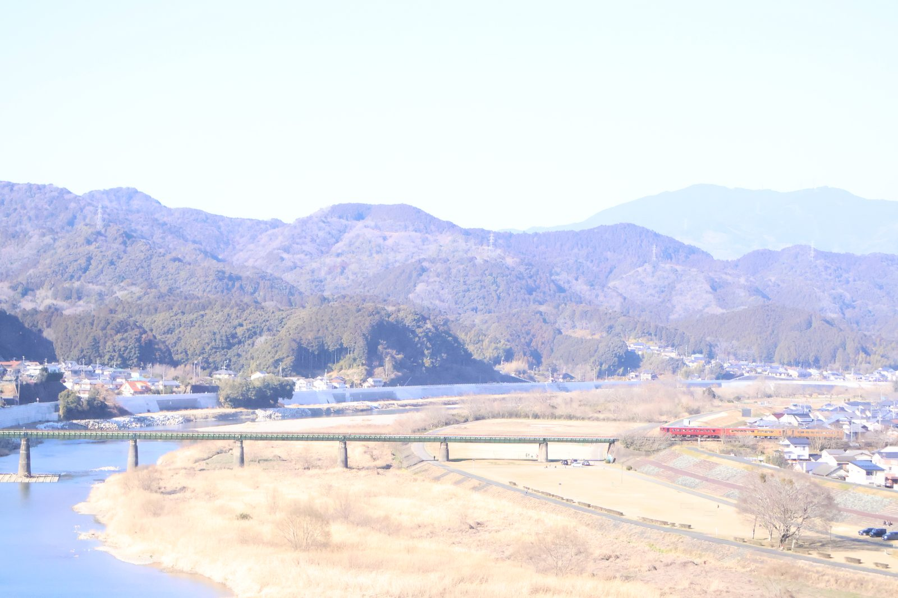

大洲の視点 ・ 出典: 大洲市役所 ・ 約15分で読める
2060年の大洲は３万人？ 市が立てた目標の中身

 メモう
メモう
国の計算だと、2060年の大洲は2万人を切るんよ。
市はそれでも「3万人」を目標に掲げてる。
当たるかより、毎年の数字を見ていくほうが大事だと思う。
3行でいうと調べた資料 22本
- 国の推計では2060年の大洲市は19,842人。市はそれでも「3万人」を目標に掲げる
- 指標は明暗が分かれ、出生率は目標に遠く、移住・ふるさと納税は着実に伸びている
- 目標の当否より、毎年更新される数字の定点観測が大事だと思う
「第２期大洲市まち・ひと・しごと創生総合戦略」（2020年３月策定、2024年２月・2025年２月改訂）を読んでいて、一番引っかかったのが人口の将来展望だった。
国立社会保障・人口問題研究所の推計に準拠すると、大洲市の人口は2060年には19,842人まで減少すると予測されているという。
それに対して大洲市は、緩やかな人口減少を見据えながらも「2060年時点で30,000人」を目標として掲げている。
推計と目標の間に約１万人の差があるということは、それだけ本気で人口減少に歯止めをかけようとしている、ということなんだと思う。
「2060年に３万人」の目標と現実の差
第１期総合戦略の振り返りも率直だった。2017年には一時的に緩やかな人口減少に転じたものの、2018年７月豪雨 災害に伴う転出者数の増加や出生数の減少により、その後の人口減少が顕著になったという。
ＫＰＩ（重要業績評価指標）の達成状況は、全47件中43％が目標達成、28％が目標値の60％未満の進捗にとどまって おり、豪雨災害の影響の大きさを認めた上で、目標値の設定が過大だった面もあると振り返っている。
指標ごとに見える明暗
基本目標ごとの数値も見てみると、明暗が分かれていて興味深い。
「公共交通圏の人口割合」は基準（2017年）78.2％に対し、現状（2023年）はすでに91.5％まで伸びていて、 目標の85％をとっくに超えている。
一方で気になったのが「出生率」の指標。総合戦略には「38.23‰」のように千分率（パーミル）で書かれていて、正直パッと見て何の数字か分かりにくかった。
中身を確認すると、これは「15～49歳の女性人口1,000人あたり、１年間に何人の子どもが生まれたか」という指標で、要するに％（パーセント、百分率）ではなく1,000人単位の割合。
数字が小さく見えても実際は結構な差がある、ということに注意しながら読む必要がある。
分かりやすく言い換えると、基準（2015～2019年平均）は女性1,000人あたり38.23人だったのに対し、現状（2020～2023年平均）は31.20人まで下がってしまっていて、目標の47.91人にはかなり遠い状況にある。
交通の便は良くなっているのに、子どもを生み育てる環境の指標は厳しくなっている、というのが今の大洲の 現在地なんだと思う。
突出して「うまくいっている」ふるさと納税
個人的に一番驚いたのは、ふるさと納税額の伸びだった。基準（2018年度）5,859万円に対し、現状（2023年度）は３億4,355万円と、５年ほどで約６倍に膨らんでいる。
目標の3.5億円にほぼ届く水準まで来ていて、総合戦略の中でも突出して「うまくいっている」施策の一つだと分かる。
では実際に何が売れているのか、各ふるさと納税サイトの返礼品一覧を見てみると、やはり柑橘類が主力だった。
看板商品は「紅まどんな」で、８～15個入りが27,000円、５～６個入りが17,000円あたりの寄附額に設定されている。
ほかにも温州みかんジュース（１Ｌ×６本で18,000円）や旬野菜の定期便、キウイ・柿・桃（2026年は７月中旬から発送予定）など、肱川流域の気候を活かした果物・野菜の加工品が中心になっている印象だった。
市の額を大きく伸ばしているのは、目新しい商品というより、大洲の気候そのものが強みになっている柑橘類、というのが実感に近い。
2026年８月時点であらためて人気ランキングを確認してみたところ、１位は「紅まどんな」（21,000円）で変わらず不動の看板商品だったが、２位に「シャインマスカット」（先行予約、19,000円）、３位に「梨『梨の王様』特大新高」（18,000円）がランクインしていた。
栗のむき身（真空パック、1.0ｋｇ・13,000円）も上位に入っていて、柑橘類だけでなくぶどうや梨、栗まで、大洲の気候が育てる果物が幅広く支持されている様子がうかがえる。
あわせて令和６年度の実績を確認したところ、15,464件・４億4,143万536円と、本文で紹介した目標の3.5億円をすでに突破していた。その後さらに伸びていて、令和７年度は17,770件・４億6,079万3,300円である。件数で14.9％増、金額で4.4％増だ。
総合戦略の「うまくいっている施策」の勢いは、記事公開後もまだ続いているようだ。
その返礼品がどのサイトから申し込めるのかも確認してみた。大洲市の公式サイトを見ると、確認できるだけで13のポータルサイトに対応していた。楽天ふるさと納税やさとふる、ふるさとチョイス、ふるなびをはじめ、一休.com、JALふるさと納税、Amazonふるさと納税、au PAYふるさと納税、セゾンのふるさと納税、ふるラボ、KABU&ふるさと納税、JRE MALL、Yahoo!ショッピングまで並ぶ。
特定の１サイトに絞らず、寄附者がふだん使っているポイントサービスやクレジットカードに合わせて間口を広げている、という運営側の工夫がうかがえる。
どのサイト経由の寄附が一番多いかまでは、公開資料からは確認できなかった。
観光施設入込客数も基準（2018年）504,013人に対し現状（2023年）468,538人と、コロナ禍からの回復途上に ありつつ、目標の60万人を見据えている。
大洲市は紅まどんなを作っているのか。産地を辿ってみた
返礼品の看板商品である「紅まどんな」について、そもそも大洲市で作られているものなのか気になったので調べてみた。
紅まどんなは愛媛県でしか栽培できないオリジナル品種で、正式な品種名は「愛媛果試第28号」。
「南香」と「天草」という２つの柑橘を交配して生まれた品種で、極薄の皮とゼリーのようになめらかな果肉が特徴だという。
「紅まどんな」という名前自体はＪＡ全農（全国農業協同組合連合会）の登録商標で、糖度や外観など一定の基準をクリアしたものだけがこの名前で出荷できる、いわばブランド認証の仕組みになっている。
栽培の主産地としては宇和島市や八幡浜市のイメージが強かったが、ＪＡ全農えひめの資料によると、県内の紅まどんなはＪＡえひめ中央・ＪＡにしうわ・ＪＡえひめ南・ＪＡおちいまばりを中心に出荷されており、大洲市はＪＡ愛媛たいき管内の産地の一つとして位置づけられている。
つまり大洲市の紅まどんなは、宇和島・八幡浜と同じ南予エリア一帯の柑橘産地の一部として、地元の生産者によって実際に作られている、というのが実態だった。
返礼品ランキングで不動の１位になっているのも、こうした産地としての裏付けがあってのことのようだ。
紅まどんな以外にも、大洲の特産品を調べてみた
柑橘以外の特産品も気になって調べてみると、大洲市には長く続いているものがいくつかあった。
まず和菓子の「志ぐれ」。小豆と米粉・餅粉を蒸し上げた郷土菓子で、もとは大洲藩の江戸屋敷で作られていた秘伝の菓子が、参勤交代を通じて藩内に伝わったのが始まりとされている。
現在も市内に製造販売する店が10店舗ほど残っていて、店ごとに食感や甘さ、風味が違うそうだ。
もう一つが「大洲和紙」。江戸時代から続く手すき和紙の伝統技術で、国の伝統的工芸品にも指定されている。
書道用紙として全国的に評価が高く、近年はアクセサリーや雑貨のモチーフとしても使われているという。
ふるさと納税の返礼品ランキングには柑橘や果物ばかりが並んでいたが、こうした和菓子・工芸品まで含めて見ていくと、大洲市の「特産品」の幅は思っていたより広い。
ふるさと納税の返礼品としてもっと前面に出してもよさそうな気がする。
移住・定住の数字も、じわじわ伸びている
移住・定住まわりの数字も動いている。空き家バンクの成約数は基準（2018年）35件に対し、現状（2023年）は累計83件（目標は累計100件）。
補助対象移住者数は基準51人に対し現状68人（目標80人）と、こちらも着実に積み上がっている。
人口減少そのものは止められないとしても、「移住・定住」「関係人口」「ふるさと納税」といった外部から 資源を呼び込む施策は、数字を見る限りしっかり効果が出ているように見える。
「2060年に３万人」という目標を、達成できるかどうかで一喜一憂するより、こうやって毎年更新されるＫＰＩを 定点観測して「何がうまくいっていて、何が苦戦しているか」を追いかけるほうが、このサイトらしい向き合い方 なんじゃないかと思っている。
その紅まどんなは、大洲で採れたのか
返礼品の説明文を開くと、答えは案外あっさり書いてある。
寄附額17,000円の「紅まどんな 秀品 5から6個入」の説明には、「原料原産地は愛媛県大洲市」とある。
ただし商品名のほうは「紅まどんな 秀品 5から6個入（JA愛媛たいき管内産）」となっている。この2つは、微妙に違うことを言っている。
JA愛媛たいきの管内は、大洲市と喜多郡だ。同JAは平成11年4月1日に、JA大洲・JA内子町・JA長浜青果・JA五十崎町・JA肱川の5つが合併してできた。喜多郡はいま内子町だけなので、管内は大洲市と内子町にまたがる。
「管内産」は、そのままでは「大洲市産」と同じ意味にならない。
ここを詰めるには、制度の側を見るしかない。
ふるさと納税の返礼品には地場産品基準がある。根拠は地方税法第37条の2第2項と、それを受けた平成31年総務省告示第179号だ。
読むと、答えがひとつではないことが分かる。
告示の第5条は「次の各号のいずれかに該当するもの」と書いていて、12の入口が並んでいる。どれかひとつを通れば地場産品になる。柑橘に関係しそうなものを抜き出すと、こうなる。
| 号 | 条件（要約） |
|---|---|
| 第1号 | その市町村の区域内で生産されたもの |
| 第2号 | 区域内で原材料の主要な部分が生産されたもの |
| 第3号 | 区域内で製造・加工の工程のうち主要な部分を行い、相応の付加価値が生じているもの |
| 第4号 | 区域内で生産されたもので、近隣市町村のものと混在したもの（流通構造上、混在が避けられない場合に限る） |
| 第9号 | 災害で甚大な被害を受け、従来の返礼品を出せなくなったときの代替 |
つまり「大洲で採れた」と「大洲で搾った」は、制度上どちらも地場産品になる。前者が第1号、後者が第3号だ。
読者が引っかかるのは、たぶんここだと思う。
そして第4号が、さきほどの「管内産」に効いてくる。
選果場でまとめて選果・出荷される農産物は、近隣市町のものと混ざることが避けられない。第4号は、それでも地場産品として認めると書いている。ただし条文は「区域内において生産されたものであって」を前提に置いていて、大洲で採れたものが入っていることが条件になっている。
制度上は問題なく通る。そのうえで、原料原産地としては「愛媛県大洲市」と表示されている。それが今のところ正確な答えになる。
市自身も、この区分を議会で口にしている。令和5年3月の市議会で、市長は返礼品の登録についてこう答弁した。
返礼品の登録には、当該地方団体の区域内において生産されたものや区域内において返礼品等の原材料の主要な部分が生産されたものなど、国の定める基準がございまして、現在登録している返礼品は、地元特産品や本市の地域資源を生かしたものでありまして
第1号と第2号を、そのまま並べている。このとき大洲市の返礼品は令和5年2月28日時点で536品目だった。制度が始まった平成20年度は4品目だったという。
「自己申告で終わりでは」と思うかもしれないが、告示は市の側にも仕事を課している。
第2条は、食品を返礼品にする場合、市は事業者との契約に基づいて定期的に調査を行い、産地名の適正な表示が行われていないことが疑われる場合や、地場産品基準に適合しないおそれがある場合には、速やかに実地調査等を行うこと、と定めている。
疑わしければ現地を見に行く。それが市の仕事として書かれている。
なお、この基準は間もなく変わる。
令和7年総務省告示第220号（令和7年6月24日公布）が第5条第3号を改正し、令和8年10月1日以後に開始する指定期間から適用される。
| 現在（2026年9月まで） | 2026年10月1日から | |
|---|---|---|
| 条件 | 工程の主要な部分を行い、相応の付加価値が生じていること | 製造等により返礼品の価値の過半が生じていること |
| 証明 | 不要 | 製造等を行う者による証明が必要 |
| 公表 | 不要 | 募集開始日までに自治体が証明の内容を公表 |
「相応の付加価値」という言葉が、「価値の過半」という量の話に変わる。そのうえで証明と公表が要る。「大洲で加工したから地場産品」と言える範囲が、条文の上で狭くなる。
さらに令和8年総務省告示第145号により、同じ日から条番号もずれる。地場産品基準は第5条から第6条へ、根拠条文も法第37条の2第2項第3号から第4号へ移る。条文を引くときは注意がいる。
大洲の柑橘は、伊予灘に落ちる斜面にある
では、大洲のどこで作られているのか。
答えは長浜だ。大洲市の北西の端、肱川が伊予灘に注ぐ河口の一帯である。
JA愛媛たいきは、自らのサイトの柑橘の欄にこう書いている。
瀬戸内海に面した大洲市長浜地域は、歴史ある柑橘の産地
主な品種として温州ミカン・紅まどんな・甘平が挙がっている。合併前に「JA長浜青果」という青果専門の農協が長浜にあったことも、産地としての年季を裏づけている。
市議会でも同じことが語られている。令和4年3月の一般質問で、議員は市内の第1次産業をこう整理した。
肱川流域では野菜や米が、中山間地域では果樹や米が生産され、また海岸部ではかんきつ類や果物が生産されており、特に紅まどんなは、ふるさと納税の返礼品として大変人気があると伺っております
大洲市で伊予灘に面しているのは長浜地域だけなので、この「海岸部」は長浜を指している。
そして集落の名前が、地形まで語っている。
2020年農林業センサスの農業集落別データで、大洲市の364集落の果樹類作付面積を数え直してみた。数字が公表されたのは50集落だけだが、上位の顔ぶれははっきりしている。
| 順位 | 集落（旧町村） | 果樹類の作付面積 |
|---|---|---|
| 1 | 中峯（櫛生村） | 13.8ha |
| 2 | 尾坂（出海村） | 10.7ha |
| 3 | 日之浦（喜多灘村） | 9.6ha |
| 4 | 河向（柳沢村） | 8.3ha |
| 5 | 二軒茶屋（新谷村） | 4.9ha |
上位3つが、すべて旧長浜町の伊予灘沿いだった。10位までに旧長浜町域が6つ入る。
そして名前が「中峯」「尾坂」、少し下には「大峯」「小山」が並ぶ。峯・坂・山である。平地ではない。
旧長浜町は1955年1月1日に長浜町・喜多灘村・櫛生村・出海村・大和村・白滝村の1町5村が合併してでき、2005年1月11日に大洲市・肱川町・河辺村と合併して今の大洲市になった。その旧6町村のうち、数字が公表された出海・櫛生・大和の3つだけで81.3haある。残り3つは秘匿なので、実際はもっと多い。
平地が少なく、集落は肱川と伊予灘の海岸線に沿って点在している。園地は海に落ちる斜面にある、と地名から読める。高いところから海と町が同時に見える場所で、柑橘が作られている。
本文で触れた温州みかんジュースについても、答弁がある。令和7年12月の市議会で、市長は6次産業化の例としてこう述べた。
長浜未来協議会のかんきつ農家の皆さんが自分たちが生産したかんきつでジュースを作られて販売しているのも徐々に人気が出てきているようでございます
長浜で採れた柑橘を、長浜の農家が自分で搾っている。第1号にも第3号にも当たる形だ。
同じ答弁で市長は、原材料に大洲産のものを使い一定の審査基準を満たした商品を「大洲ええモンセレクション」として認定していることにも触れている。この認定制度の応募対象は「大洲市内の事業所で製造または加工される商品及び収穫される農林水産物」。国の基準と同じく、「作った」と「採れた」を並べて扱っている。
ただし、市町村ごとの収穫量までは公的統計では追えない。作物統計調査の市町村別のみかんは平成15年産（2003年）が最後で、しかも出荷量が全国の0.1％を超える市町村しか載っていない。大洲も旧長浜町もその表には無い。さらに紅まどんなを含む「その他かんきつ類」は、国が栽培面積しか調べていない。大洲の紅まどんなが何トンかは、公的な数字としては存在しない。
愛媛のみかん産地として、大洲は8番目だった
「大洲で作られている」は確かめられた。では、どのくらいの規模なのか。
農林水産省の「令和6年 市町村別農業産出額（推計）」（令和8年7月24日公表）で、愛媛県の20市町を並べ直してみた。
| 順位 | 市町 | みかんの産出額 | 全国順位 |
|---|---|---|---|
| 1 | 八幡浜市 | 90億6,000万円 | 全国3位 |
| 2 | 宇和島市 | 66億5,000万円 | 全国7位 |
| 3 | 西予市 | 秘匿 | 全国26位 |
| 4 | 伊方町 | 12億5,000万円 | 34位 |
| 5 | 今治市 | 10億9,000万円 | 38位 |
| 6 | 松山市 | 9億7,000万円 | 41位 |
| 7 | 伊予市 | 3億5,000万円 | 74位 |
| 8 | 大洲市 | 2億9,000万円 | 84位 |
八幡浜は大洲の約31倍ある。宇和島でも約23倍だ。
果実全体で見ても、大洲市は12億5,000万円で県内11位にとどまる。1位の八幡浜市は123億9,000万円で、こちらは全国13位に入る。大洲は南予の柑橘産地の一部ではあるが、規模は2桁違う。
市長も、それを認める言い方をしている。令和7年12月の答弁の続きだ。
特にふるさと納税につきましては、県内では八幡浜、そして今治、愛南町がビッグスリーでございまして、内容を見てみますと、八幡浜はやはり温州ミカン、それから紅まどんな、今治市につきましても、かんきつと今治タオル、愛南町につきましても、かんきつ、そして愛南の場合は、皆さん御存じのようにカツオのたたきといったものが主たる返礼品となっているわけでございまして、これらに匹敵するような、あるいは少しでも近づけるような特産品を引き続き開発することにつきましても努力していきたい
では、大洲の農業は何で稼いでいるのか。同じ統計を、今度は大洲市の中で品目別に並べ直すと、意外な絵が出てくる。
| 部門・品目 | 産出額 | 全国順位 | 県内順位 |
|---|---|---|---|
| 農業産出額（合計） | 124億4,000万円 | 249位 | 6位 |
| 畜産計 | 69億5,000万円 | 146位 | 2位 |
| うち豚 | 47億9,000万円 | 34位 | 県内1位 |
| 野菜計 | 31億6,000万円 | 204位 | 2位 |
| うちトマト | 8億6,000万円 | 43位 | 県内1位 |
| 果実計 | 12億5,000万円 | 168位 | 11位 |
| うちキウイフルーツ | 3億0,000万円 | 全国8位 | 4位 |
| うちみかん | 2億9,000万円 | 84位 | 8位 |
| うちくり | 2億9,000万円 | 全国9位 | 3位 |
大洲の農業でいちばん稼いでいるのは豚だった。47億9,000万円は県内1位で、果実全体の4倍近い。トマトも県内1位である。
そして果実の中で最大はキウイフルーツで、みかんではない。栗もほぼ同額で、全国9位に入っている。
農業全体では大洲市は県内6位（124億4,000万円）で、4位の八幡浜市（137億円）、5位の宇和島市（133億6,000万円）と大きくは離れていない。柑橘で差がついている分を、豚と野菜で取り返している構図になっている。
そう見ると、返礼品ランキングの上位に栗のむき身が入っていたことにも、統計の裏づけがある。愛媛県はキウイフルーツの収穫量が全国1位（令和7年産4,860ｔ・全国の23％）で、みかんは全国2位（12万1,800ｔ・19％）だ。大洲は、全国1位の県のなかで全国8位のキウイ産地ということになる。
看板が紅まどんなであることと、大洲の農業の主役が紅まどんなであることは、別の話だった。
出典・参考にした資料
第２期大洲市まち・ひと・しごと創生総合戦略（2025年２月改訂版・大洲市公式サイト） 大洲市ふるさと納税寄附金について（大洲市公式サイト） ふるさと納税の実績について（大洲市公式サイト）※2026年９月１日の更新で令和７年度実績に差し替わった 大洲市の返礼品ランキング（ふるさとチョイス） 紅まどんな（ＪＡ全農えひめ） 大洲の銘菓「志ぐれ」（大洲市公式サイト） 大洲和紙（日本伝統文化振興機構） 特例控除対象寄附金の対象となる都道府県等の指定に係る基準等を定める件（平成31年総務省告示第179号） — 令和6年6月28日改正版・2026年9月12日確認 / 第5条に地場産品基準の12区分。第2条に食品の産地表示を市が調べる義務 平成31年総務省告示第179号の一部を改正する件（令和7年総務省告示第220号） — 令和7年6月24日公布・2026年9月12日確認 / 第5条第3号を「価値の過半」＋証明・公表に改める。令和8年10月1日以後の指定から適用 ふるさと納税に係る告示・通知等（総務省 関連資料） — 2026年9月12日確認 / 現行版・改正告示・令和8年10月1日適用版の索引 令和6年 市町村別農業産出額（推計） — 令和8年7月24日公表 / 詳細品目別データ。市町村ごとの品目別産出額と全国順位・県内順位 作物統計調査 令和7年産みかんの栽培面積、結果樹面積、収穫量及び出荷量 — 令和8年5月26日公表 / 都道府県別の収穫量と割合 作物統計調査 令和7年産キウイフルーツの栽培面積、結果樹面積、収穫量及び出荷量 — 令和8年8月7日公表 / 愛媛県が収穫量全国1位 2020年農林業センサス 農業集落別データ（都道府県別） — 2020年2月1日現在の調査・2026年9月12日確認 / 愛媛県の表17から大洲市364集落の果樹類作付面積を集計 果樹・特産品（JA愛媛たいき） — 2026年9月12日確認 / 「瀬戸内海に面した大洲市長浜地域は、歴史ある柑橘の産地」 JA愛媛たいきの概況 — 2026年9月12日確認 / 平成11年4月1日設立。旧JA大洲・内子町・長浜青果・五十崎町・肱川が合併。管内は大洲市と喜多郡 紅まどんな 秀品 5から6個入（JA愛媛たいき管内産） — 2026年9月12日確認 / 寄附額17,000円。説明文に「原料原産地は愛媛県大洲市」 令和5年大洲市議会第1回定例会 会議録第3号（令和5年3月7日） — 2026年9月12日確認 / 市長が地場産品基準の区分に言及。返礼品536品目 令和7年大洲市議会第4回定例会 会議録第4号（令和7年12月） — 2026年9月12日確認 / 長浜のかんきつ農家のジュース、県内のふるさと納税「ビッグスリー」 令和4年大洲市議会第1回定例会 会議録第2号（令和4年3月） — 2026年9月12日確認 / 「海岸部ではかんきつ類や果物が生産されており」 令和2年大洲市議会第4回定例会 会議録第4号（令和2年12月） — 2026年9月12日確認 / 紅まどんなの提供元が愛媛たいき農業協同組合であるとの答弁 大洲ええモンセレクションについて — 2026年9月12日確認 / 応募対象は市内で製造・加工される商品と市内で収穫される農林水産物この記事をサイトに掲載した日: 2026/07/31